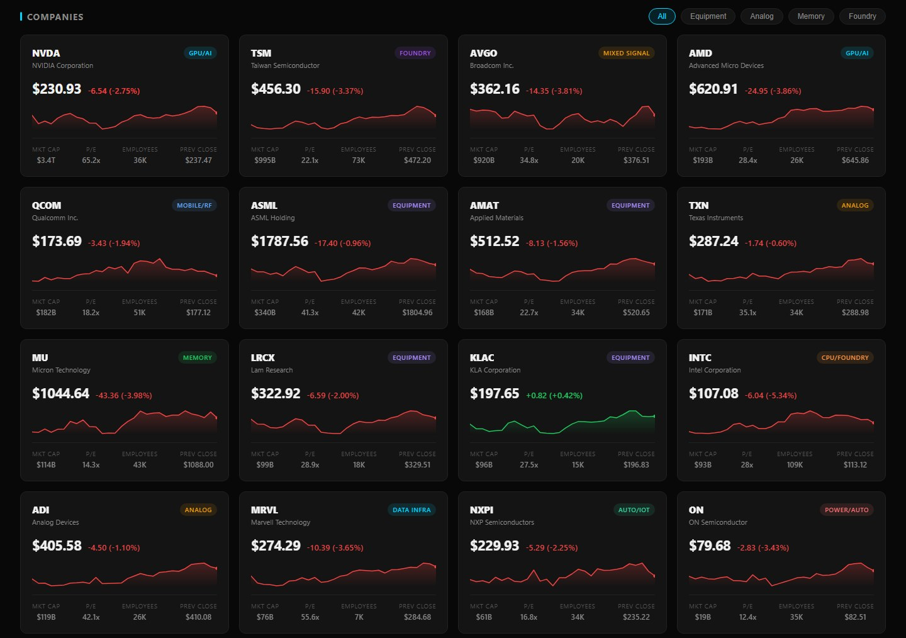

Overview
The goal was one page that answers "how is the chip sector doing today?" at a glance. It's the first in a planned set of industry trackers.
It tracks 16 companies across the supply chain: NVDA TSM AVGO AMD QCOM ASML AMAT TXN MU LRCX KLAC INTC ADI MRVL NXPI ON. You can filter them by segment: equipment, analog, memory, and foundry.
Architecture
Browsers can't call Yahoo Finance directly. The API needs a session cookie and a "crumb" token, and it doesn't send CORS headers. So the page picks a route based on where it's running:
- Local: a small PowerShell
HttpListenerserver (serve.ps1) serves the page, gets the cookie and crumb, and returns all 16 tickers from a single/api/financerequest. - Hosted: on GitHub Pages there's no server, so the page sends one request per ticker through a public CORS proxy.
- Refresh: on load the page fetches 3-month history for the sparklines, then a 1-day range for accurate daily change. During US market hours (9:30–16:00 ET) it refreshes every 60 seconds.
Features
- Summary tiles: total market cap, advancing vs declining, average daily change, a sentiment bar
- Company cards: price, change, 3-month sparkline, market cap, P/E, employees, previous close
- Top movers, sector performance grid, and a generated daily summary
- Failure states: a "Data unavailable · HH:MM" indicator and per-card error styling when a ticker fails
The Fear & Greed index
Instead of borrowing someone else's sentiment number, the dashboard computes its own from five weighted factors across the 16 tracked stocks:
| Factor | What it measures | Weight |
|---|---|---|
| Price momentum | % of stocks above their 20-day moving average | 25% |
| Market breadth | % of stocks advancing today | 25% |
| Volatility | Inverse of the average daily move | 20% |
| Momentum strength | RSI-style ratio of up days | 15% |
| Sector breadth | % of sectors positive | 15% |

The bug: AMD up 165% in a day
Once live data was flowing, the dashboard reported AMD at +165% for the day. At first that looked like a real (if wild) market move. It wasn't. The 3-month request reports change relative to the start of the 3-month window, not the previous close.
The fix was a second, 1-day request after the 3-month one, used only to correct the daily change figures. AMD dropped to a believable +1.33%.
The lesson: sanity-check data before you accept it. A number that would be front-page news is more likely a bug than news.
With the fix in place, the local build was verified against real data: an average daily change of +1.54%, with 10 tickers up and 6 down.
Known limitations
- Unofficial data source. The Yahoo v8 endpoint is undocumented, can rate-limit, and isn't licensed for redistribution. It's fine for a personal tool, but not for a product.
- Third-party proxy. The hosted build depends on a free public CORS proxy, its most likely point of failure.
- Sample content. The news and outlook panels use placeholder content, not a live feed, and the offline fallback simulates prices when data can't be fetched.
- Slow local start. Local loading takes 30–60 seconds because requests run one after another.
Next steps
- Replace the public proxy with a Cloudflare Worker I control.
- Run local fetches in parallel.
- Clearly label simulated data, or stop simulating when the live fetch fails.
- Swap the sample news panel for a real news API, or remove it.
- Write a README covering the architecture and the data-source caveats.